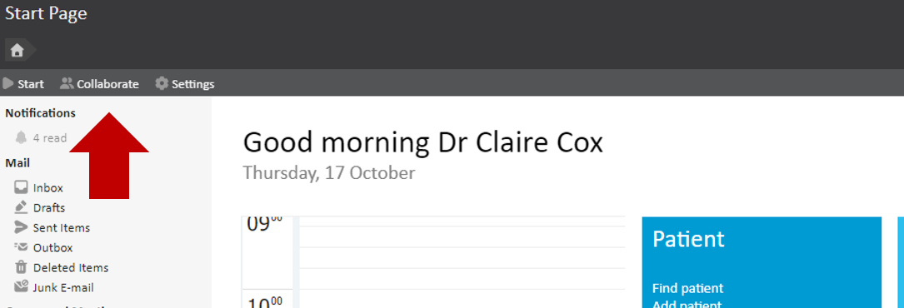
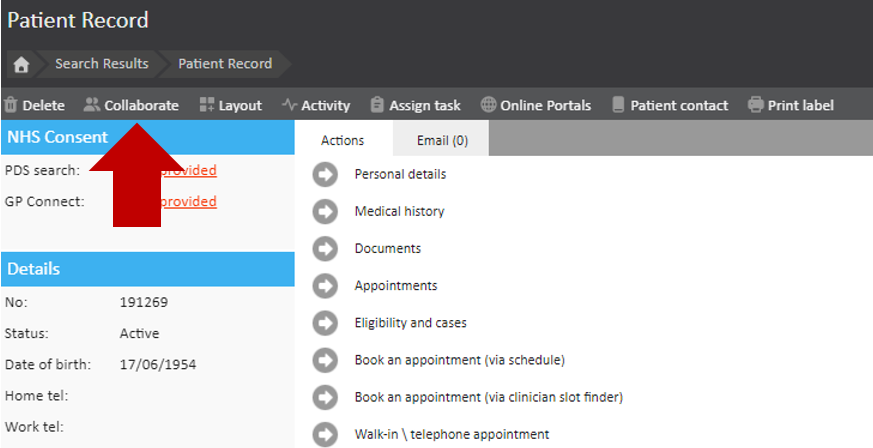
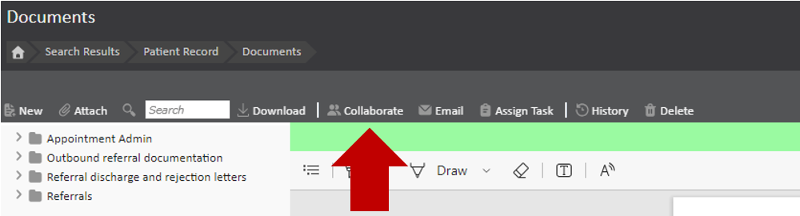
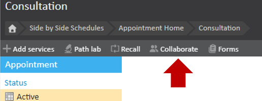
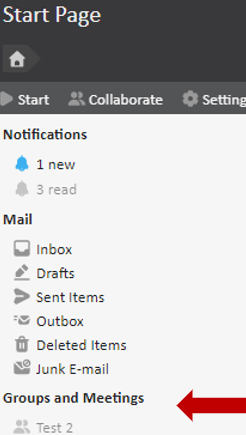
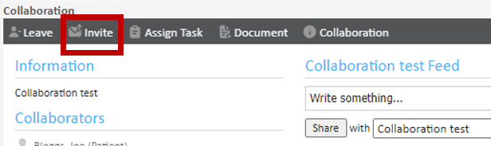
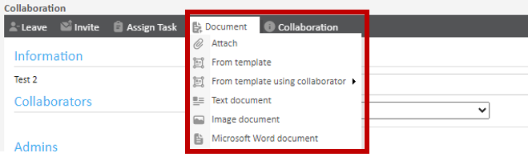
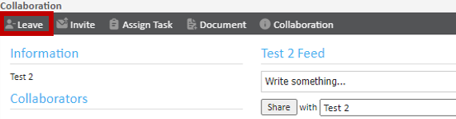
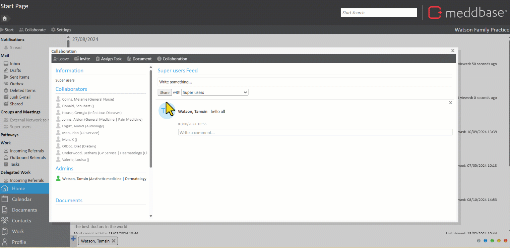

Meddbase has a range of communication methods available in the system such as tasks, feeds and emails. Collaborations are another way to communicate within Meddbase. Collaborations allow you to create group workspaces where users can communicate in a live feed and share documents. Collaborations can be created for general discussions, a specific patient or a specific document.
This article will cover the functionality of a collaboration, from creating a collaboration, attaching a document and leaving a collaboration. This article is split into the following sections:
2. Inviting other users to join a Collaboration
3. Attaching documents to a Collaboration
There are several ways to create a collaboration in the Meddbase application.




When creating a collaboration, you will be prompted to give the collaboration a name and a description. Administrators of the collaboration will be able to approve requests to join, if it is a closed collaboration.
Once created the collaboration will appear under 'Groups and Meetings' on the left panel of the Meddbase Application.

To add others to a collaboration, click the Invite Button at the top of the collaboration. You will be asked if you are inviting from outside your practice. Click no if the person you are collaborating on works with you in Meddbase. This will load the search box where you can search for another person within you practice. Click Invite to add more people.

As well as starting a collaboration from a document, you can also attach a document to a collaboration.
Click the Document button within the collaboration. From here you can select the type of document you wish to attach to the collaboration.

Once a document has been attached, other members of the collaboration will now be able to see and download this file.
If the collaboration was created from a patient home page, or consultation, any document attached to the collaboration will also be automatically linked to that patient.
If you have been invited to a collaboration, you may also leave it.
To leave a collaboration, click the Leave button at the top left of the collaboration dialog box.

Please note: If you have created the collaboration and therefore the Admin, you cannot leave until you nominate a new administrator for the collaboration.
If you wish to do this, click Collaboration> Members and then untick your user as an admin and tick another user. Close the members page and then follow the above steps to leave.
